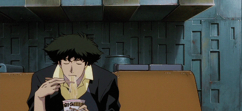
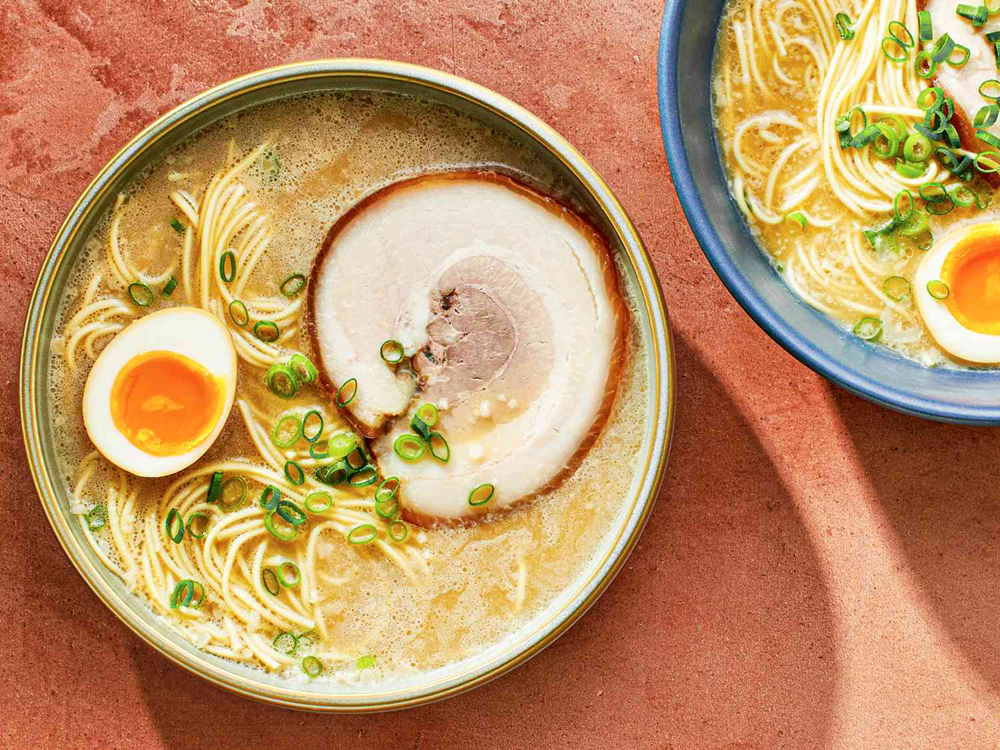
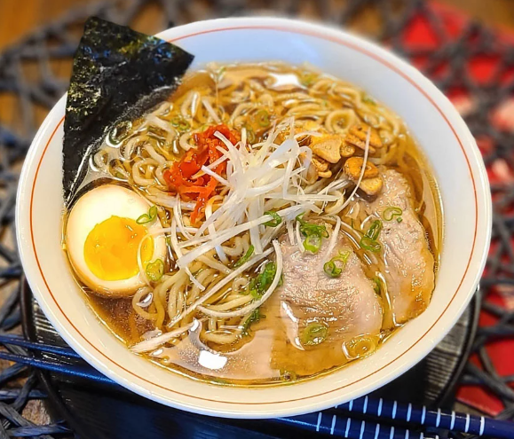
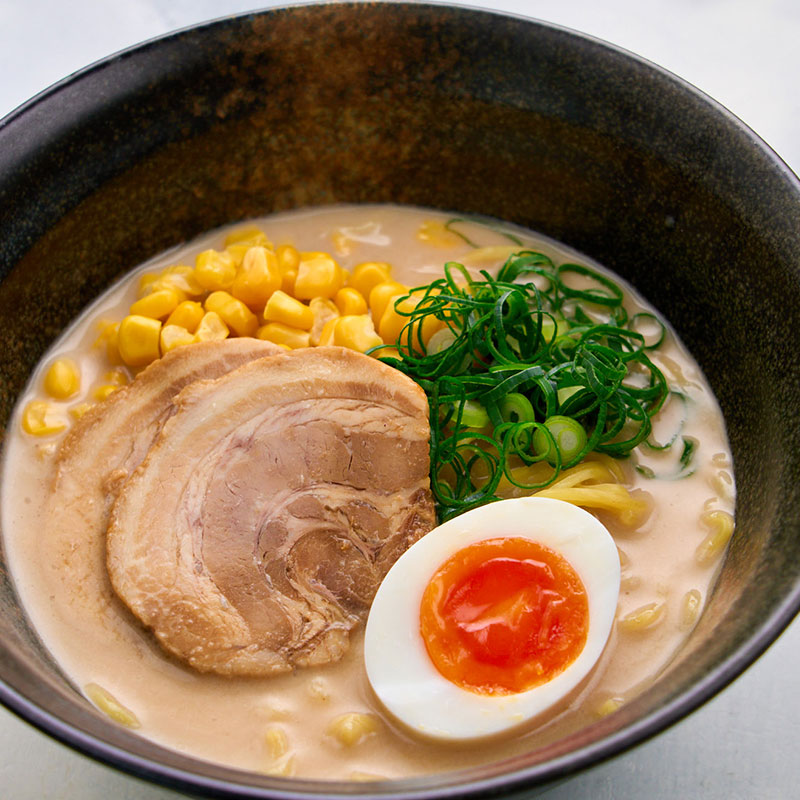

A ramen deep dive
Ramen Around the World

Ramen is one of my favorite foods. It started in Japan but has spread all over the world, with each region adding its own twist. The broth, noodles, and toppings all work together to make something that feels both simple and complex. Here are three styles I love and want to try more of.
Three Styles I Love
-
Rich Broth
Tonkotsu Ramen
Tonkotsu ramen comes from Fukuoka, Japan. The broth is made by boiling pork bones for many hours until it turns thick, creamy, and white. It has a deep, rich flavor that feels very filling and warm. It is usually topped with chashu pork, a soft-boiled egg, green onions, and nori. This is one of the most popular styles of ramen in Japan and around the world.

-
Classic Flavor
Shoyu Ramen
Shoyu means soy sauce in Japanese, and that is the base of this broth. It is usually a clear, brown, chicken or pork broth seasoned with soy sauce. The flavor is lighter than tonkotsu but still very savory and satisfying. It is one of the oldest styles of ramen and is often topped with bamboo shoots, green onions, fish cake, and a soft-boiled egg. I like it because it does not feel too heavy.

-
Savory Taste
Miso Ramen
Miso ramen is from Hokkaido, the northernmost island of Japan, where winters are very cold. The broth is made with miso paste, which gives it a deep, salty, and slightly earthy flavor. It pairs really well with corn, butter, and bean sprouts as toppings. The thick broth keeps you warm and is perfect for cold weather. It is my favorite style to try during fall and winter.

- Reading order: The page moves top to bottom, matching how most people naturally scan.
- Proximity: Each photo, label, name, and description are grouped together so they feel like one item.
- Similarity: All three ramen entries use the same layout, making the page easy to scan.
- Hierarchy: The large title comes first, then the intro, then the individual ramen entries.